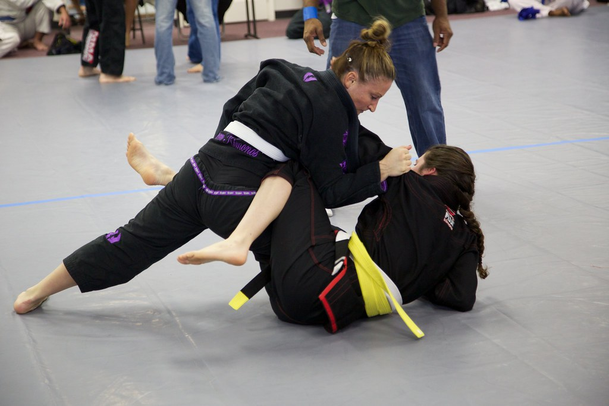

Co dělat
- Nejprve lámat gripy a kontrolovat holeně soupeře.
- Passovat pod úhlem s důrazem na postoj a bázi.
- Střídat směry passu podle reakce soupeře.
BJJ POSITION
Dynamická pozice postavená na gripech, nohách jako štítu a změně úhlů.

V Open Guard udržuj nohy aktivně mezi sebou a soupeřem a měň gripy podle jeho reakce.